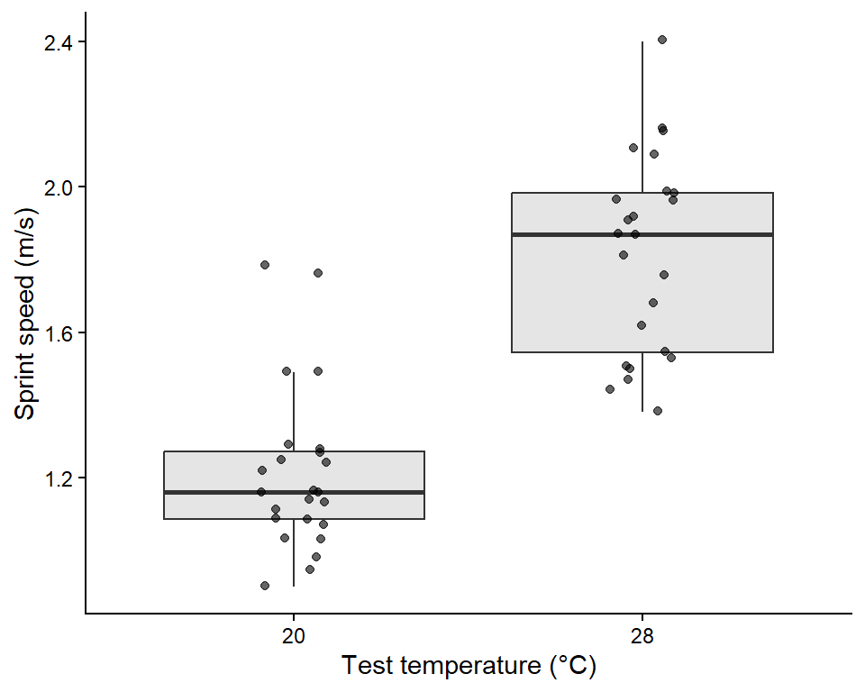
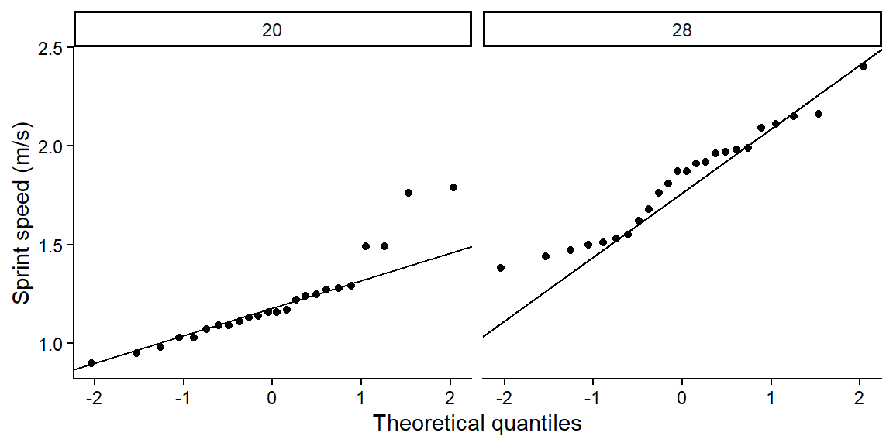
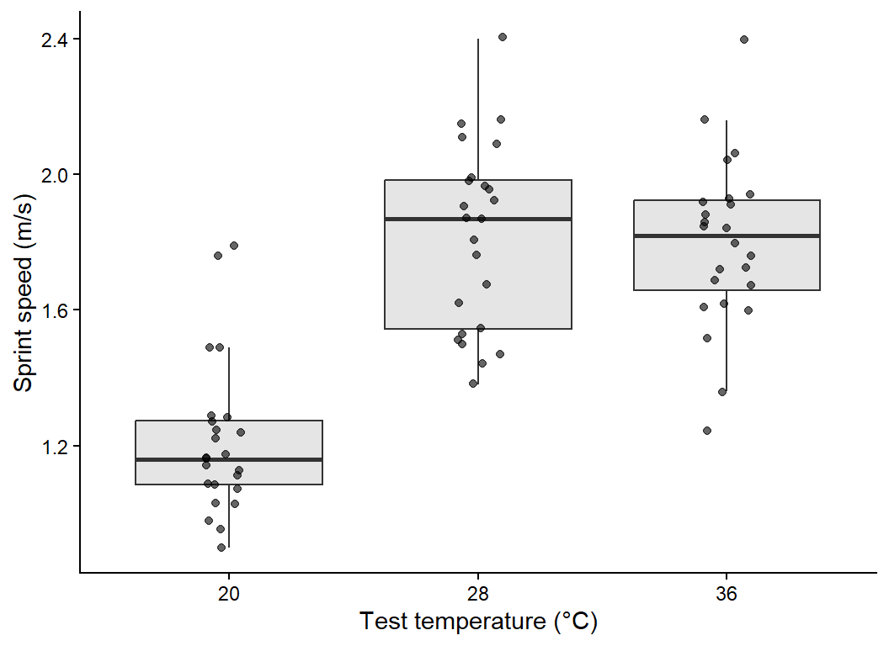
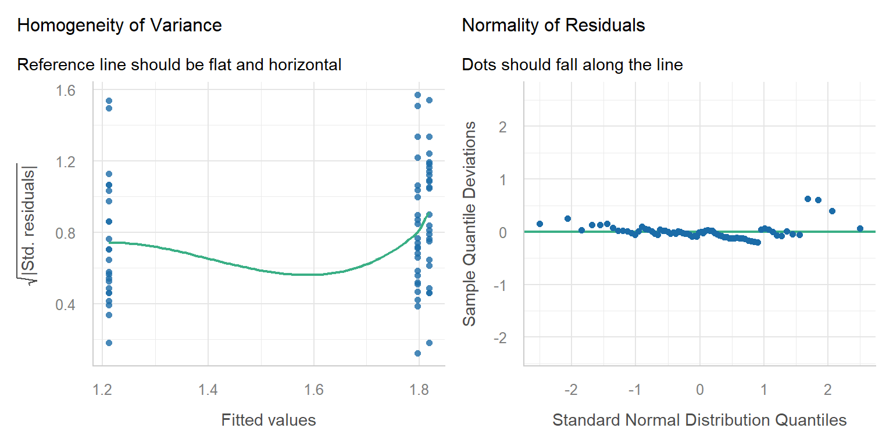
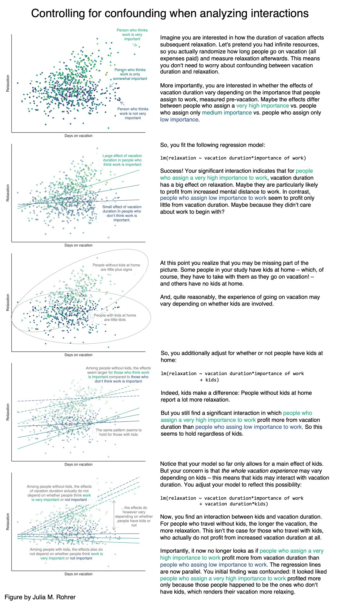
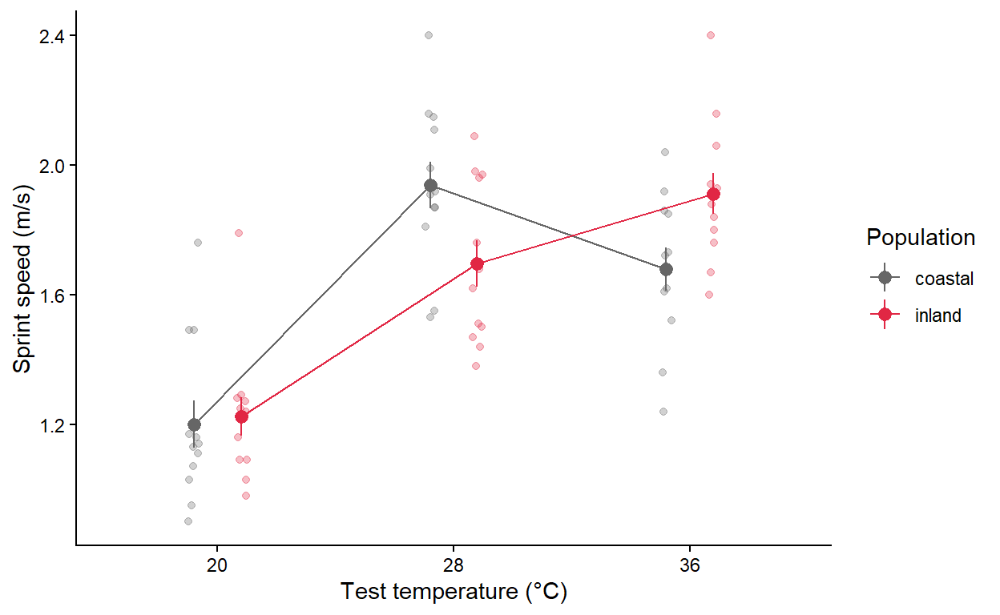
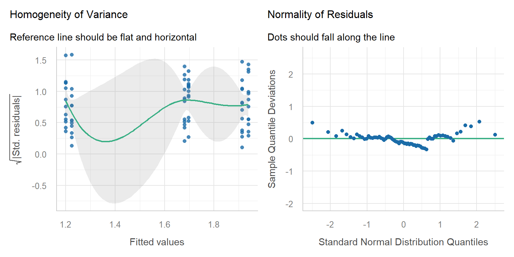

Week 5: Comparing groups with t-tests, one-way ANOVA and two-way ANOVA
In this workshop you will learn the three most common tests for comparing groups: the two-sample t-test, the one-way ANOVA and the two-way ANOVA. They might look like three different tests, but they are all the same idea, a linear model with categorical predictors, so learning one makes the next one easy. Workshop materials are available in the GitHub repository ECS200.
TipLearning outcomes
By the end of this workshop you should be able to:
Choose between a t-test, one-way ANOVA and two-way ANOVA for a research question.
Visualise group data and check the assumptions of these tests.
Run each test in R and find the important numbers in the output.
Write a results sentence that reports the direction, size and statistical support of an effect.
Before we start
Download this week’s data and save it in the data folder of your workshop folder (see Introduction to R for how the folder is set up).
Create a new R script with the usual header and load the packages. We will use one new package this week, performance, which draws all the assumption-checking plots for a model in one line (the plots themselves come from its partner package, see).
Code
# Week 5 workshop - Statistical inference# Written by Nicholas Wu, 1234578, 25/03/2027# Install new packages (only needed once, run in the console)# install.packages("performance")# install.packages("see")# Load packageslibrary(tidyverse) # data import, wrangling and plottinglibrary(performance) # checking model assumptionslibrary(see) # draws the plots for the performance package# Set your working directory to your workshop folder# setwd("C:/Users/YOUR-NAME/Documents/ECS200")
Study context
Lizards are ectotherms, so their body temperature, and therefore how fast they can run, depends on the temperature around them. Performance usually increases with temperature up to an optimum and then drops off quickly (a thermal performance curve). Populations from hotter places often have a higher optimum.
To test this, 72 adult dragons were collected from a coastal (mild) and an inland (hot) population. In the lab, each lizard was randomly assigned to one test temperature (20, 28 or 36 °C), warmed to that temperature, and raced once along a 1 m racetrack to measure its maximum sprint speed (m/s). Each lizard was used only once, so every row is an independent lizard.
A mountain heath dragon (Rankinia diemensis).
Code
# Load the datalizard_data <- readr::read_csv("data/lizard_sprint.csv")# Check the structure: temperature is stored as a number, but in this# experiment it is a treatment group, so we convert it to a factor.lizard_data <- lizard_data %>% dplyr::mutate(temperature =factor(temperature, levels =c(20, 28, 36)),population =factor(population))dplyr::glimpse(lizard_data)
All three tests ask the same question: is the difference between group means bigger than we would expect from random variation alone? They differ only in how many groups and how many predictors you have.
Research question
Predictor(s)
Test
R function
Do two groups differ?
1 categorical variable with 2 levels
Two-sample t-test
t.test()
Do three or more groups differ?
1 categorical variable with 3+ levels
One-way ANOVA
aov()
Do two factors affect the response, and does the effect of one depend on the other?
2 categorical variables
Two-way ANOVA
aov(y ~ A * B)
Note
Functions without a package name in front, such as t.test(), aov() and lm(), come with R itself (the stats package), so you never need to install or load them.
Part A: Two groups (t-test)
Question: Do lizards sprint faster at 28 °C than at 20 °C?
1. Background
A two-sample t-test compares the means of two independent groups. It calculates a t value:
\[
t = \frac{\text{difference between the two group means}}{\text{standard error of that difference}} = \frac{\text{signal}}{\text{noise}}
\]
A large t (a big difference relative to the variation within groups) gives a small p-value. Three things make a difference easier to detect:
a bigger difference between the means (more signal);
less variation within each group (less noise);
a larger sample size (the standard error shrinks as n grows).
R uses Welch’s t-test by default. It does not assume the two groups have equal variances, so it is a safe default for ecological data.
Use the app below to see how these three ingredients change the result. Every time you move a slider, a new experiment is simulated in your browser.
viewof tt_diff = Inputs.range([0,1], {value:0.4,step:0.05,label:"True difference between means (m/s)"})viewof tt_sd = Inputs.range([0.05,0.8], {value:0.3,step:0.05,label:"Variation within groups (SD)"})viewof tt_n = Inputs.range([3,50], {value:10,step:1,label:"Lizards per group (n)"})viewof tt_seed = Inputs.button("Resample")
html`<div class="app-verdict">Welch's <i>t</i> = <b>${fmt(tt_data.test.t)}</b>, df = ${fmt(tt_data.test.df,1)}, <i>p</i> <b>${fmtp(tt_data.test.p)}</b>.${tt_data.test.p<0.05?"The difference is <b>statistically significant</b>: it is large compared with the noise.":"The difference is <b>not statistically significant</b>: we cannot separate it from random noise with this sample."}Red points and bars show each group's mean and 95% confidence interval.</div>`
Try this: set the true difference to 0 and press Resample many times. About 1 in 20 experiments will still be “significant” just by chance. That is what a significance level of α = 0.05 means.
Hypotheses:
Null hypothesis (H0): mean sprint speed is the same at 20 °C and 28 °C.
Alternative hypothesis (H1): mean sprint speed differs between 20 °C and 28 °C.
Significance level: α = 0.05.
2. Visualise
First keep only the two temperatures we want to compare, then plot the raw data. A boxplot with the raw points on top shows the centre, spread, shape and any extreme values of each group.
Code
# Keep only the 20 and 28 degree lizards for the t-testlizard_two <- lizard_data %>% dplyr::filter(temperature %in%c("20", "28")) %>% dplyr::mutate(temperature =droplevels(temperature)) # drop the unused 36 level# Boxplot with the raw dataggplot2::ggplot(lizard_two, ggplot2::aes(x = temperature, y = sprint_speed)) + ggplot2::geom_boxplot(outlier.shape =NA, fill ="grey90") +# hide boxplot outliers (raw points show them) ggplot2::geom_jitter(width =0.1, alpha =0.6) +# raw data, spread sideways ggplot2::labs(x ="Test temperature (°C)", y ="Sprint speed (m/s)") + ggplot2::theme_classic()

Code
# Descriptive statistics for each grouplizard_two %>% dplyr::group_by(temperature) %>% dplyr::summarise(mean =mean(sprint_speed),sd =sd(sprint_speed),n = dplyr::n())
# A tibble: 2 × 4
temperature mean sd n
<fct> <dbl> <dbl> <int>
1 20 1.21 0.226 24
2 28 1.82 0.273 24
Lizards at 28 °C look faster than lizards at 20 °C, both groups have a similar spread and there are no extreme values.
3. Check assumptions
Assumption
How to check
Here
Independence: each observation is from a different, unrelated unit
Think about the study design
✅ Each lizard was raced once at one temperature.
Normality: the data in each group are roughly bell-shaped
Histogram or Q-Q plot for each group
✅ See below.
Equal variances (only for the classic t-test)
Compare the SDs. If the largest SD is less than 2 × the smallest, they are similar enough
✅ Similar SDs, and Welch’s test does not need this anyway.
Code
# Q-Q plot for each group: points should fall close to the lineggplot2::ggplot(lizard_two, ggplot2::aes(sample = sprint_speed)) + ggplot2::stat_qq() + ggplot2::stat_qq_line() + ggplot2::facet_wrap(~ temperature) + ggplot2::labs(x ="Theoretical quantiles", y ="Sprint speed (m/s)") + ggplot2::theme_classic()

WarningWhen is a t-test NOT appropriate? (click to expand)
What you see
Why it is a problem
What to do instead
Strongly skewed data or big outliers, especially with small samples
The mean is pulled around by extreme values
Log-transform the response (Week 2), or use the non-parametric Wilcoxon rank-sum test, wilcox.test(y ~ group, data = ...)
The same individuals measured twice (before/after, left/right)
Observations are not independent
Paired t-test, t.test(before, after, paired = TRUE), or a mixed model (Week 12)
The response is a count (e.g. number of seedlings) with many zeros
Counts are not normally distributed
Generalised linear model for counts (Week 8)
The response is yes/no (e.g. alive/dead)
Not a continuous measurement
Logistic regression (Week 11)
More than two groups
Running many t-tests inflates false positives
One-way ANOVA (Part B)
For example, the Wilcoxon test compares the ranks of the values instead of the values themselves, so a single extreme value has little influence:
Code
wilcox.test(sprint_speed ~ temperature, data = lizard_two)
Wilcoxon rank sum exact test
data: sprint_speed by temperature
W = 25.5, p-value = 6.085e-10
alternative hypothesis: true location shift is not equal to 0
4. Model
The formula response ~ group reads “sprint speed explained by temperature”.
Welch Two Sample t-test
data: sprint_speed by temperature
t = -8.3763, df = 44.412, p-value = 1.088e-10
alternative hypothesis: true difference in means between group 20 and group 28 is not equal to 0
95 percent confidence interval:
-0.7515599 -0.4601067
sample estimates:
mean in group 20 mean in group 28
1.212083 1.817917
5. Interpret
The output gives everything you need:
t = ...: the t value. Its sign only tells you which group was first alphabetically.
df = ...: degrees of freedom (Welch’s test gives a decimal value).
p-value = ...: the probability of seeing a difference this large if the null hypothesis were true.
95 percent confidence interval: the likely range for the true difference in means (group 1 minus group 2). If it does not include 0, the difference is significant at α = 0.05.
sample estimates: the mean of each group.
Methods sentence: Sprint speed of lizards tested at 20 °C and 28 °C was compared using a two-sided Welch’s two-sample t-test in R (version 4.5.1). Significance was set with α = 0.05.
Results sentence (direction + size + statistical support + figure):
Lizards sprinted faster at 28 °C (mean ± SD = 1.82 ± 0.27 m/s) than at 20 °C (1.21 ± 0.23 m/s), an average increase of 0.61 m/s (95% CI 0.46 to 0.75 m/s; Welch’s t44.4 = 8.38, p < 0.001; Fig. 1).
Part B: Three or more groups (one-way ANOVA)
Question: Does sprint speed differ among the three test temperatures (20, 28 and 36 °C)?
1. Background
With three groups you could run three t-tests (20 vs 28, 20 vs 36, 28 vs 36), but every extra test adds another 5% chance of a false positive. A one-way analysis of variance (ANOVA) asks a single question first: do all groups share the same mean, or does at least one differ?
ANOVA compares two kinds of variation:
Between-group variation: how far the group means are from the overall mean (signal).
Within-group variation: how spread out individuals are inside each group (noise).
\[
F = \frac{\text{variation between groups}}{\text{variation within groups}}
\]
A large F means the group means are further apart than the noise would suggest. If the ANOVA is significant, a post hoc test (Tukey’s HSD) then tells you which groups differ, while keeping the overall false-positive rate at 5%.
App: between- versus within-group variation
Code
import {anova1} from"./apps/ecs200.js"
Code
viewof an_spread = Inputs.range([0,0.6], {value:0.3,step:0.05,label:"Spread of the group means (signal)"})viewof an_sd = Inputs.range([0.05,0.8], {value:0.3,step:0.05,label:"Variation within groups (noise)"})viewof an_n = Inputs.range([3,30], {value:12,step:1,label:"Lizards per group (n)"})viewof an_seed = Inputs.button("Resample")
html`<div class="app-verdict">One-way ANOVA: <i>F</i><sub>${an_data.res.df1},${an_data.res.df2}</sub> = <b>${fmt(an_data.res.F)}</b>, <i>p</i> <b>${fmtp(an_data.res.p)}</b>.Red lines are the group means and the dashed line is the overall (grand) mean. ${an_data.res.p<0.05?"At least one group mean differs.":"No evidence that the group means differ."}</div>`
Hypotheses:
H0: mean sprint speed is the same at all three temperatures.
H1: at least one temperature has a different mean sprint speed.
2. Visualise
Code
# Boxplot with raw data for all three temperaturesggplot2::ggplot(lizard_data, ggplot2::aes(x = temperature, y = sprint_speed)) + ggplot2::geom_boxplot(outlier.shape =NA, fill ="grey90") + ggplot2::geom_jitter(width =0.1, alpha =0.6) + ggplot2::labs(x ="Test temperature (°C)", y ="Sprint speed (m/s)") + ggplot2::theme_classic()

Code
# Mean, SD and sample size per temperaturelizard_data %>% dplyr::group_by(temperature) %>% dplyr::summarise(mean =mean(sprint_speed),sd =sd(sprint_speed),n = dplyr::n())
# A tibble: 3 × 4
temperature mean sd n
<fct> <dbl> <dbl> <int>
1 20 1.21 0.226 24
2 28 1.82 0.273 24
3 36 1.80 0.249 24
Speed looks lowest at 20 °C and highest at 28 °C, and the spread is similar across groups.
3. Check assumptions
The assumptions are the same as for the t-test (independence, normality and equal variances), but for ANOVA we check them on the residuals. A residual is the distance between an observation and its group mean, the part of the data the model cannot explain.
The performance::check_model() function draws the main diagnostic plots, and each panel has a subtitle telling you what a “good” plot looks like.
Code
# Fit the one-way ANOVA first, then check its residualslizard_aov <-aov(sprint_speed ~ temperature, data = lizard_data)performance::check_model(lizard_aov, check =c("homogeneity", "qq"))

Assumption
Plot
Here
Equal variances
Homogeneity of variance: the reference line should be flat and horizontal
✅ Roughly flat.
Normal residuals
Normality of residuals: dots should fall along the line
✅ Dots follow the line.
Independence
Study design
✅ One lizard per measurement.
WarningWhen is a one-way ANOVA NOT appropriate? (click to expand)
What you see
What to do instead
Very unequal spread among groups (largest SD > 2 × smallest)
Welch’s ANOVA, oneway.test(y ~ group, data = ...), which does not assume equal variances
Strongly skewed data or outliers with small samples
Log-transform, or the non-parametric Kruskal–Wallis test, kruskal.test(y ~ group, data = ...)
Repeated measurements on the same individuals or sites
Mixed-effects model (Week 12)
Counts or yes/no responses
Generalised linear models (Weeks 8 and 11)
A numeric predictor (e.g. temperature measured as 18.2, 22.7, 25.1 °C…)
Linear regression (Week 7)
Code
# Example: Kruskal-Wallis test, the non-parametric alternativekruskal.test(sprint_speed ~ temperature, data = lizard_data)
Kruskal-Wallis rank sum test
data: sprint_speed by temperature
Kruskal-Wallis chi-squared = 38.754, df = 2, p-value = 3.843e-09
4. Model
We already fitted the model above with aov(). summary() gives the ANOVA table.
Code
# ANOVA tablesummary(lizard_aov)
Df Sum Sq Mean Sq F value Pr(>F)
temperature 2 5.670 2.8350 45.33 2.69e-13 ***
Residuals 69 4.315 0.0625
---
Signif. codes: 0 '***' 0.001 '**' 0.01 '*' 0.05 '.' 0.1 ' ' 1
Code
# Which temperatures differ? Tukey's honestly significant difference testTukeyHSD(lizard_aov)
Tukey multiple comparisons of means
95% family-wise confidence level
Fit: aov(formula = sprint_speed ~ temperature, data = lizard_data)
$temperature
diff lwr upr p adj
28-20 0.60583333 0.4329134 0.7787533 0.0000000
36-20 0.58416667 0.4112467 0.7570866 0.0000000
36-28 -0.02166667 -0.1945866 0.1512533 0.9515937
NoteANOVA is a linear model (click to expand)
You get exactly the same F test with lm(). The lm() summary also shows the difference of each group from the first (reference) group and the R2, the proportion of variation in sprint speed explained by temperature. This is the link to linear regression in Week 7.
Code
lizard_lm <-lm(sprint_speed ~ temperature, data = lizard_data)summary(lizard_lm)
Call:
lm(formula = sprint_speed ~ temperature, data = lizard_data)
Residuals:
Min 1Q Median 3Q Max
-0.55625 -0.17771 -0.00208 0.13583 0.60375
Coefficients:
Estimate Std. Error t value Pr(>|t|)
(Intercept) 1.21208 0.05105 23.745 < 2e-16 ***
temperature28 0.60583 0.07219 8.392 3.83e-12 ***
temperature36 0.58417 0.07219 8.092 1.36e-11 ***
---
Signif. codes: 0 '***' 0.001 '**' 0.01 '*' 0.05 '.' 0.1 ' ' 1
Residual standard error: 0.2501 on 69 degrees of freedom
Multiple R-squared: 0.5678, Adjusted R-squared: 0.5553
F-statistic: 45.33 on 2 and 69 DF, p-value: 2.689e-13
5. Interpret
Reading the output:
ANOVA table: temperature has 2 and 69 degrees of freedom, F = 45.33 and p < 0.001, so at least one temperature differs.
Tukey’s HSD: each row is one pair of temperatures. diff is the difference in means, lwr and upr are its 95% confidence interval, and p adj is the p-value adjusted for making three comparisons.
Methods sentence: Differences in sprint speed among three test temperatures (20 °C, 28 °C, 36 °C) were tested with a one-way ANOVA using the aov() function, followed by Tukey’s HSD post hoc comparisons with the TukeyHSD() function in R. Model assumptions were checked with residual diagnostic plots with the check_model() from the performance R package (Lüdecke et al., 2021).
Results sentence:
Sprint speed differed among test temperatures (one-way ANOVA: F2,69 = 45.33, p < 0.001; R2 = 0.57; Fig. 2). Lizards were 0.61 m/s faster at 28 °C than at 20 °C (95% CI 0.43–0.78, Tukey p < 0.001) and 0.58 m/s faster at 36 °C than at 20 °C (p < 0.001), but speed at 28 °C and 36 °C did not differ (difference = -0.02 m/s, p = 0.95).
Part C: Two factors (two-way ANOVA)
Question: Does the effect of temperature on sprint speed differ between the coastal and inland populations?
1. Background
A two-way ANOVA tests two categorical predictors at once (here temperature and population) and, most importantly, their interaction. Three questions are tested:
Main effect of temperature: averaged over both populations, does speed change with temperature?
Main effect of population: averaged over all temperatures, is one population faster?
Interaction (temperature × population): does the effect of temperature depend on which population the lizard came from?
If there is no interaction, the lines on an interaction plot (mean of each group joined by population) are parallel. If the lines are not parallel or they cross, the effect of one factor depends on the other. Use the app to build some interaction plots.
App: what does an interaction look like?
Code
viewof ix_temp = Inputs.range([-0.4,0.4], {value:0.25,step:0.05,label:"Temperature effect (change per step: 20 → 28 → 36 °C)"})viewof ix_pop = Inputs.range([-0.4,0.4], {value:0.1,step:0.05,label:"Population effect (inland minus coastal)"})viewof ix_int = Inputs.range([-0.4,0.4], {value:0,step:0.05,label:"Interaction (extra temperature effect for inland lizards)"})
html`<div class="app-verdict">${ix_int ===0?"Interaction = 0, so the lines are <b>parallel</b>: temperature has the same effect in both populations and you can interpret each main effect on its own.":"Interaction ≠ 0, so the lines are <b>not parallel</b>: the effect of temperature depends on the population. Interpret the interaction first, not the main effects on their own."}</div>`

A visual explanation of interactive effects.
2. Visualise
Code
# Mean and standard error for every temperature x population combinationlizard_summary <- lizard_data %>% dplyr::group_by(temperature, population) %>% dplyr::summarise(mean =mean(sprint_speed),se =sd(sprint_speed) /sqrt(dplyr::n()),n = dplyr::n(),.groups ="drop") # remove the grouping after summarisinglizard_summary
# A tibble: 6 × 5
temperature population mean se n
<fct> <fct> <dbl> <dbl> <int>
1 20 coastal 1.2 0.0728 12
2 20 inland 1.22 0.0595 12
3 28 coastal 1.94 0.0720 12
4 28 inland 1.70 0.0718 12
5 36 coastal 1.68 0.0664 12
6 36 inland 1.91 0.0628 12
Code
# Interaction plot: raw data (faint) with group means +/- SE joined by linesggplot2::ggplot() + ggplot2::geom_jitter(data = lizard_data, ggplot2::aes(x = temperature, y = sprint_speed, colour = population),position = ggplot2::position_jitterdodge(jitter.width =0.1, dodge.width =0.4),alpha =0.3) + ggplot2::geom_pointrange(data = lizard_summary, ggplot2::aes(x = temperature, y = mean, ymin = mean - se, ymax = mean + se,colour = population),position = ggplot2::position_dodge(width =0.4)) + ggplot2::geom_line(data = lizard_summary, ggplot2::aes(x = temperature, y = mean, colour = population, group = population),position = ggplot2::position_dodge(width =0.4)) + ggplot2::scale_colour_manual(values =c("grey40", "#e12744")) + ggplot2::labs(x ="Test temperature (°C)", y ="Sprint speed (m/s)", colour ="Population") + ggplot2::theme_classic()

The lines cross: coastal lizards are fastest at 28 °C, while inland lizards keep getting faster up to 36 °C. This suggests an interaction.
3. Check assumptions
The assumptions are the same as for the one-way ANOVA. Fit the model first, then check the residuals.
Code
# Two-way ANOVA with interaction. temperature * population is shorthand for# temperature + population + temperature:populationlizard_aov2 <-aov(sprint_speed ~ temperature * population, data = lizard_data)performance::check_model(lizard_aov2, check =c("homogeneity", "qq"))

Both plots look fine and every lizard was tested only once, so the assumptions are met.
WarningWhen is a two-way ANOVA NOT appropriate? (click to expand)
Very unequal sample sizes among the combinations, or missing combinations: the order of terms then changes the results. Keep designs balanced where possible (see Research Design).
A numeric predictor (e.g. body mass) as well as a factor: use a linear model with both (Week 7).
Repeated measures, e.g. the same lizard raced at all three temperatures: observations from one lizard are not independent, so use a mixed-effects model with lizard as a random effect (Week 12).
Counts or yes/no responses: use generalised linear models (Weeks 8 and 11).
4. Model
Code
# ANOVA table for the two-way modelsummary(lizard_aov2)
Df Sum Sq Mean Sq F value Pr(>F)
temperature 2 5.670 2.8350 51.482 3.37e-14 ***
population 1 0.000 0.0004 0.007 0.93222
temperature:population 2 0.680 0.3401 6.177 0.00348 **
Residuals 66 3.634 0.0551
---
Signif. codes: 0 '***' 0.001 '**' 0.01 '*' 0.05 '.' 0.1 ' ' 1
Because the interaction is significant, the next step is to compare temperatures within each population. TukeyHSD() on the interaction term compares all 15 pairs of the six groups. You only need the rows where the population is the same on both sides, e.g. 28:coastal-20:coastal (coastal lizards at 28 °C minus coastal lizards at 20 °C).
Code
# All pairwise comparisons of the 6 temperature x population groupsTukeyHSD(lizard_aov2, which ="temperature:population")
Always read the interaction row first. If the interaction is significant, the main effects can be misleading on their own. Here the main effect of population is not significant, yet the populations clearly respond differently to temperature.
Results sentence:
The effect of temperature on sprint speed depended on population (two-way ANOVA, temperature × population: F2,66 = 6.18, p = 0.003; Fig. 3). Coastal lizards were fastest at 28 °C and slowed down at 36 °C, whereas inland lizards continued to increase their speed up to 36 °C. Averaged over populations, speed increased with temperature (F2,66 = 51.48, p < 0.001), and there was no overall difference between populations (F1,66 = 0.01, p = 0.932). This is consistent with inland lizards having a higher thermal optimum.
Writing results
Every results statement should include:
the direction of the effect (higher, lower, increase, decrease);
the magnitude (how big is the difference, ideally with a 95% CI);
the statistical support (test statistic, degrees of freedom, p-value);
a figure showing the raw data and the means;
any assumptions or caveats.
For example: “Seedlings in the drought treatment grew half as fast as the well-watered control seedlings (control = 3.0 ± 0.45 mm/day, drought = 1.5 ± 0.31 mm/day; t53 = 5.06, p < 0.001; Fig. 2).”
Assessment
Task to complete before the end of the workshop. Download the template script and the two datasets, save them in your data folder, and complete the questions in the script.
Before writing any code, find the two variables your hypothesis is about:
Response variable (y): the thing you measured and expect to change. It goes on the y-axis and on the left of the ~ in a formula.
Predictor variable (x): the groups or treatment you think cause the change. It goes on the x-axis and on the right of the ~.
Unit of replication: what one row of the data represents (one quadrat, one plot, one lizard). Each row should be an independent replicate.
A quick way to find them is to fill in this sentence: “Does[response]differ between/among[groups of the predictor]?“ For the lizard example: “Doessprint speeddiffer amongtest temperatures?“ gives sprint_speed ~ temperature.
Then check the type of each variable with dplyr::glimpse(). For these tests the response must be numeric (<dbl> or <int>) and the predictor must be categorical (convert it with factor()).
Question 1. Invasive plants and native species (t-test). An exotic grass has spread into part of a native grassland. Ecologists suspect the grass crowds out native plants. They placed 1 m2 quadrats in the invaded area and in a nearby uninvaded area and counted the number of native plant species in each quadrat.
Hypothesis: native plant species richness differs between invaded and uninvaded areas.
Variable in invaded.csv
Role
Type
Description
Native_count
Response (y)
Numeric (count)
Number of native plant species in a 1 m2 quadrat
Group
Predictor (x)
Categorical, 2 levels
Whether the quadrat was in the Invaded or Uninvaded area
Each row is one quadrat, so quadrats are the replicates.
Name the response and predictor variables, and say what one row of the data represents. Write the null and alternative hypotheses using these variables.
Convert Group to a factor. Visualise Native_count for each Group (boxplot with the raw points) and calculate the mean, SD and n of each group.
Check the assumptions (independence, normality, equal variances) and say whether each one is met.
Run a Welch’s t-test with the formula Native_count ~ Group and write a results sentence (direction, size of the difference, t, df and p).
Question 2. Plant species richness along an altitude gradient (one-way ANOVA). Temperature and growing-season length change with altitude, which may affect how many plant species can live in a place. Plots were surveyed at low, mid and high altitude on a mountain and the number of plant species in each plot was recorded.
Hypothesis: plant species richness differs among altitudes.
Variable in altitude.csv
Role
Type
Description
Richness
Response (y)
Numeric
Number of plant species recorded in a plot (estimated, so it has decimals)
Altitude
Predictor (x)
Categorical, 3 levels
Altitude band of the plot: Low, Mid or High
Each row is one plot, so plots are the replicates.
Name the response and predictor variables, say what one row represents, and write the null and alternative hypotheses.
Convert Altitude to a factor in the order Low, Mid, High (otherwise R puts them in alphabetical order: High, Low, Mid).
Visualise Richness for each Altitude and calculate descriptive statistics.
Fit a one-way ANOVA with the formula Richness ~ Altitude and check its assumptions.
Run Tukey’s HSD and write a results sentence that says which altitudes differ.
NoteHow your assessment is marked
Submit one R script (.R) before the end of the class. Write your answers to written questions as # comments next to the code that produced them.
Score
What it looks like
0
No submission or no attempt.
0.25
Submitted, but a very poor attempt (e.g. incomplete, or lots of gaps).
0.5
Most questions answered, or all answered but most annotations missing.
0.75
All questions answered, but some annotations missing or some answers incorrect.
1
Everything completed, with annotations on all code so the marker can follow it.
Tip: an annotation is a short # comment that says what the line does and why. For example: # remove the one plant with a stem dry mass of 7.4 g (data entry error).
Additional resources
Everything is a linear model: a short, visual explanation of why the t-test, ANOVA and regression are the same model.
Estimation statistics: a web app for reporting effect sizes with confidence intervals instead of p-values alone.
Steel et al. (2013)Applied statistics in ecology: common pitfalls and simple solutions. Reading pages 1–4 covers the most common mistakes with these tests.
Quinn & Keough (2002)Experimental Design and Data Analysis for Biologists, chapters 8 (one-factor ANOVA) and 9 (multifactor ANOVA), for more depth.